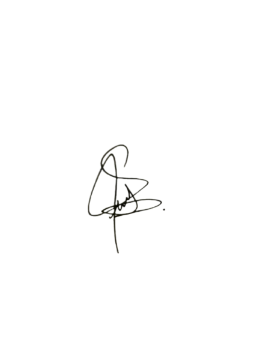

Kecamatan Curug Kabupaten Tangerang
Sekretariat: Jl. Cukanggalih II
Phone: 081234567890
Tangerang, 16 September 2024
Nomor: 01/IRMASNJ-CKG/XXXVIII/2024
Lampiran: 1 Lembar
Perihal: Undangan
Kepada Yth.
Bapak/Ibu/Saudara/i
Masjid Nurul Jannah
di - Tempat
Assalamu'alaikum Wr. Wb.
Puji syukur kehadirat Allah SWT yang telah melimpahkan rahmat dan karunia-Nya kepada kita semua. Shalawat serta salam semoga tetap tercurah kepada baginda Rasulullah SAW beserta keluarga, sahabat, dan pengikutnya yang setia, sehingga kita dapat menjalankan aktivitas sehari-hari dengan baik dan lancar.
Dengan ini kami mengundang Bapak/Ibu/Saudara/i untuk memperkokoh Ukhuwah Islamiyah dengan menghadiri acara Tabligh Akbar dalam rangka memperingati Maulid Nabi Muhammad SAW, yang Insya Allah akan dilaksanakan pada:
Demikian surat undangan ini kami sampaikan. Besar harapan kami agar Bapak/Ibu/Saudara/i dapat menghadirinya. Atas perhatian dan kehadirannya, kami ucapkan terima kasih.
Wassalamu'alaikum Wr. Wb.
Tangerang, 16 September 2024
Ketua Panitia,

Dwi Buana Nursallyna